(개념)Log4j는 코딩 도중 프로그램의 로그를 기록해주는 라이브러리다.
1. HomeController에 @Log4j 어노테이션을 추가한다
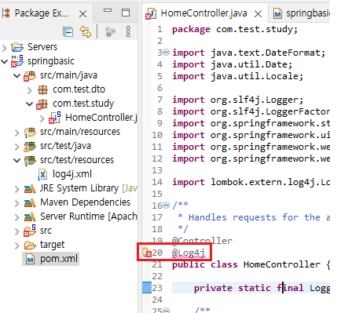
2. pom.xml에서 scope runtime부분을 주석처리 해준다
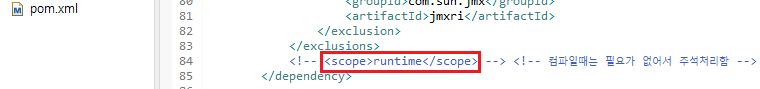
3. HomeController에서 log 테스트를 해본다.
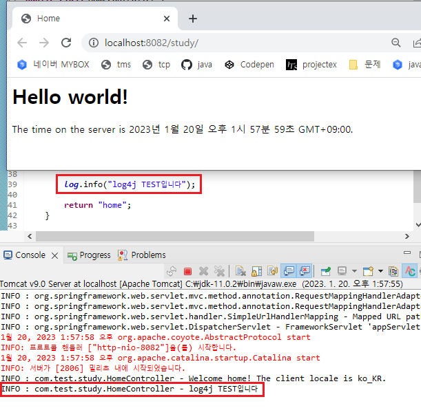
4. java/test에서 임의의 클래스에 @Log4j 어노테이션을 넣어 테스트 해본다
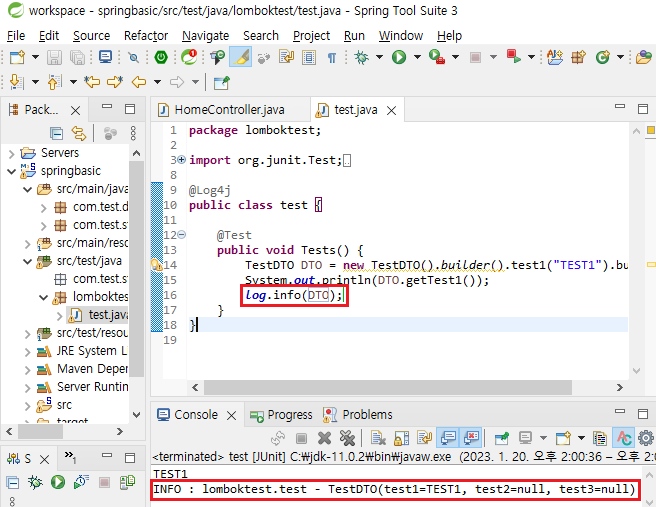
(개념)DI는 의존관계(Dependency Injection)을 주입하는 것이다.
예를 들어서 A가 B를 의존할때 A의 의존대상인 B가 바뀌면 A에게도 영향이 가는것이다
햄버거집 알바는 햄버거 레시피에 의존하므로 레시피가 바뀌게되면 알바도 레시피를 따라간다
'클래스간의 의존관계를 스프링 컨테이너가 자동으로 연결해주는 것'
1. DTO에 @Component 어노테이션을 삽입해준다.
@Component : 개발자가 직접 작성한 Class를 Bean으로 등록하기 위한 어노테이션을 말한다
DTO2도 복사해서 같이 만들어준다
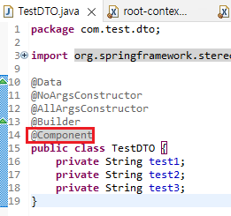
2. WEB-INF/spring 경로의 root-context.xml에서 Namespaces로 진입한다
context를 사용하기 위해 context에 체크를 해준다
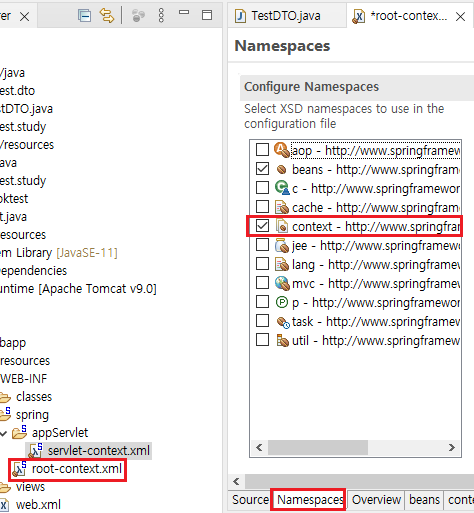
3. servlet-context.xml에 있는 context 부분을 root-context.xml로 복사하여
뒷부분을 수정해 DTO 패키지를 추가해준다.
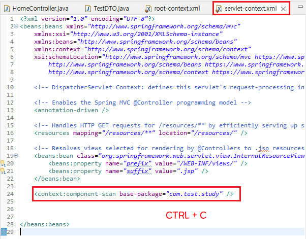
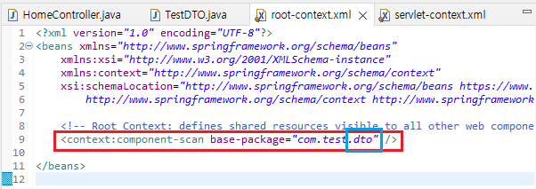
4. BeansGraph에 삽입한 DTO 패키지가 잘 들어갔는지 확인
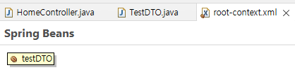
5. 테스트를 위해 Spring Test maven을 받아온다
SPRING TEST MAVEN
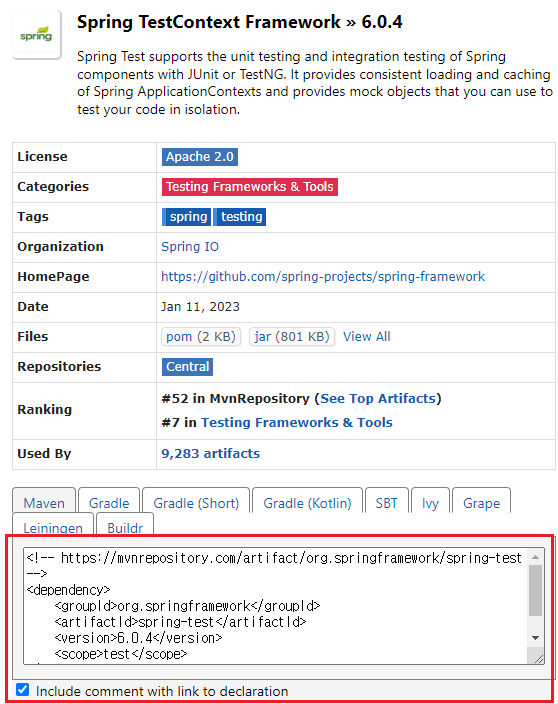
6. pom.xml의 Dependency에 spring-test를 넣어주고 최상단에 있는 springframework 버전을 받아올 수 있게 수정해준다
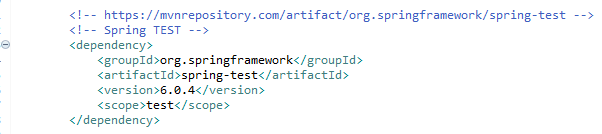
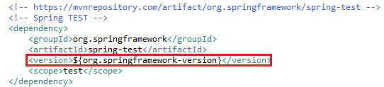
7. 만약 pom 최상단에서 에러가 발생한다면 https를 http로 바꾸어주고 Maven Project Update해주기
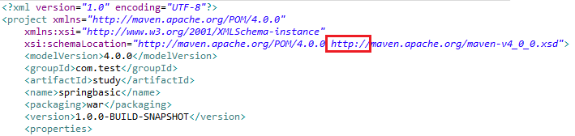
8. Junit 버전이 4.7이라면 최상위 버전인 4.12로 바꾸어주자
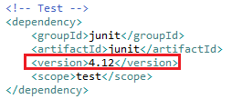
9. DI 테스트를 위해 임의의 클래스를 만들어서 아래의 어노테이션을 받아온다
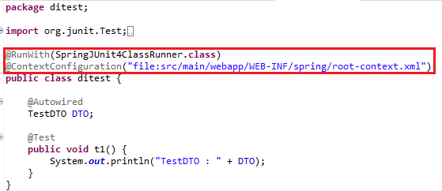
10. @Autowired와 @Test 어노테이션을 이용해 DTO를 불러오자
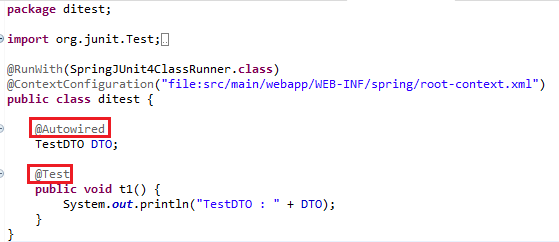
11. root-context.xml에서 DTO2에 임의의 값을 넣어준다
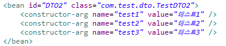
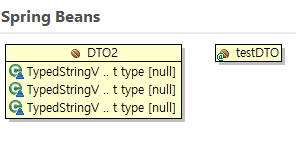
12. 아까 만든 DI Test용 클래스에서 root-context.xml에 만든 DTO2도 같이 선언해주고 확인
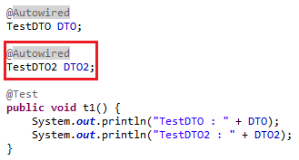
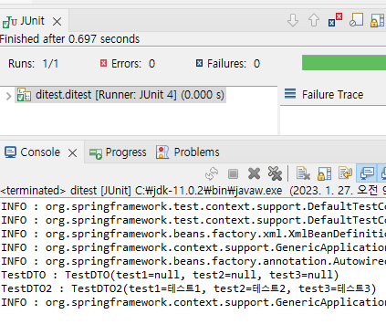
DTO에 @Data 어노테이션이 선언되어있으므로 toString()형태로 출력됨